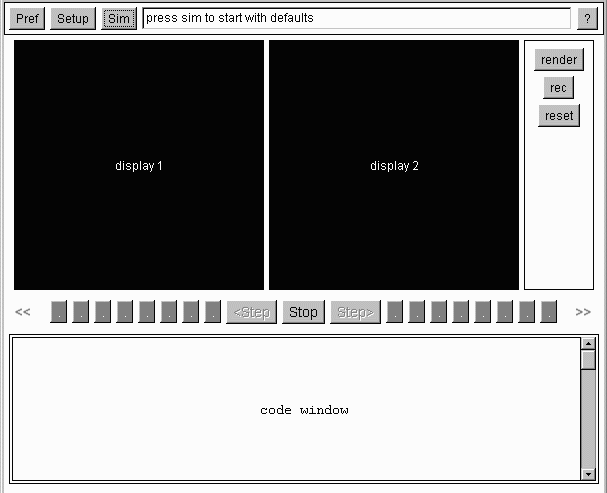

Sim Panel
The Sim panel is the main panel for the simulator.
Its user interface follow the design of 3DAAPE.
[Goldman]
There are 5 components embedded within the sim panel.
 Display1 is a canvas used to display the output of the algorithm's execution.
When the raytracer is executed it displays the image created here.
Display2 is a canvas used to display an animation that clarifies some
aspect of an algorithm's code. It shows how rays of light propagate through the
scene. For the raytracer, these rays are animated as a 3d wireframe.
The button panel controls most operations in the sim panel. The first button (render),
executes the algorithm currently selected. The output is displayed in the
first canvas. The record button (rec), is used to record the algorithm's execution.
Information about the algorithm, such as run time values of variables,
code stepping, and animations are stored. The reset button will erase all screens,
delete the recording, and set the controller to stop.
The controller is a VCR-like interface. It uses a controller pattern. It allows
continuous play and stepping through code, forward and reverse. It also has a stop
button. There are several continuous play buttons, specifying the delay between
frames of animation. The controller class was incorporated from the ASSIST
project. [Head]
The code panel displays the lines of code from an algorithm. While the
algorithm execution is being simulated, the current line is displayed in
a color different from other lines of code.
When the raytracer is executed, it will produce an image.
A ray traced through a pixel, and into a scene
can be animated by clicking on that pixel with the mouse.
To record a sequence, the record button can be pressed. Using the controller,
code can be stepped through, at several speeds, in both directions, allowing
the user to go at one's own pace, and review specific frames.